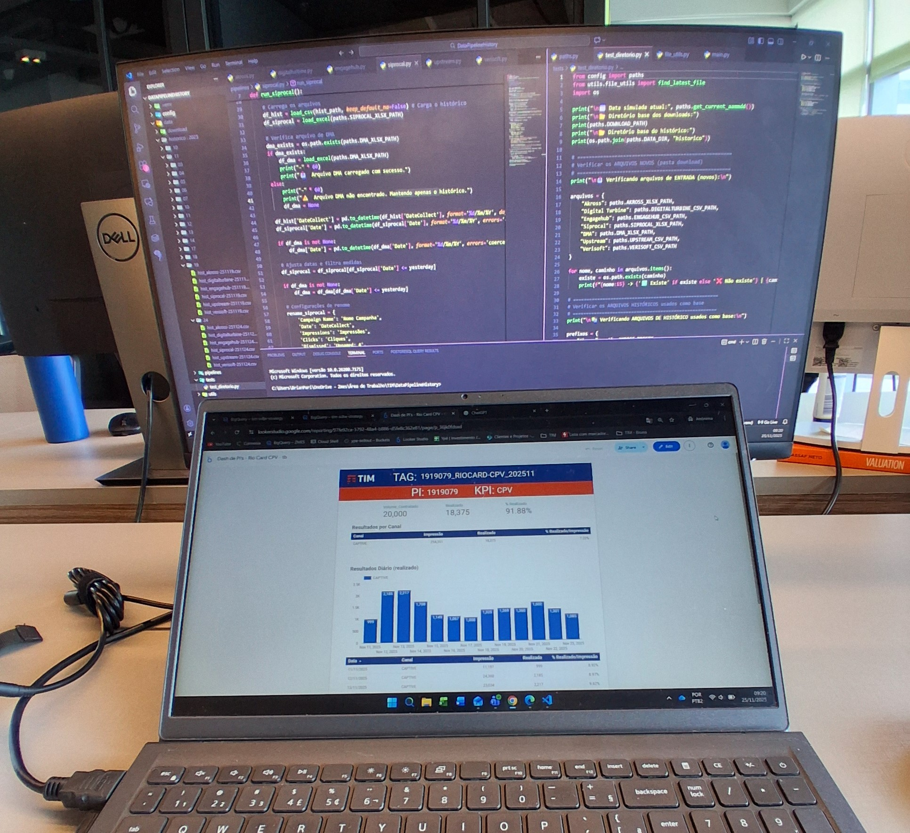

Projetos



Bacharelado em Engenharia da Computação, com experiência prática no desenvolvimento de soluções tecnológicas
que integram software, dados e sistemas computacionais. Atuei como estagiário em Dados e Tech.,
trabalhando com coleta, tratamento, organização e análise de dados, apoiando a construção de pipelines,
automação de processos e melhoria da qualidade da informação para suporte à tomada de decisão.
Desde o início da minha atuação na área, desenvolvi competências em programação, bancos de dados, ETL,
modelagem de dados e análise de grandes volumes de informação, além de conhecimentos em Machine Learning e
Inteligência Artificial Generativa, com uma base sólida em algoritmos, estruturas de dados e engenharia de
software.
Destaco meu perfil analítico, facilidade de aprendizado e capacidade de colaborar
em equipes multidisciplinares. Tenho como objetivo evoluir continuamente na área de dados e tecnologia,
contribuindo para projetos que
gerem impacto real por meio de engenharia de dados, analytics, inteligência artificial e transformação
digital. Busco oportunidades que me desafiem tecnicamente e permitam aplicar meus conhecimentos para criar
soluções eficientes, escaláveis e orientadas a dados.